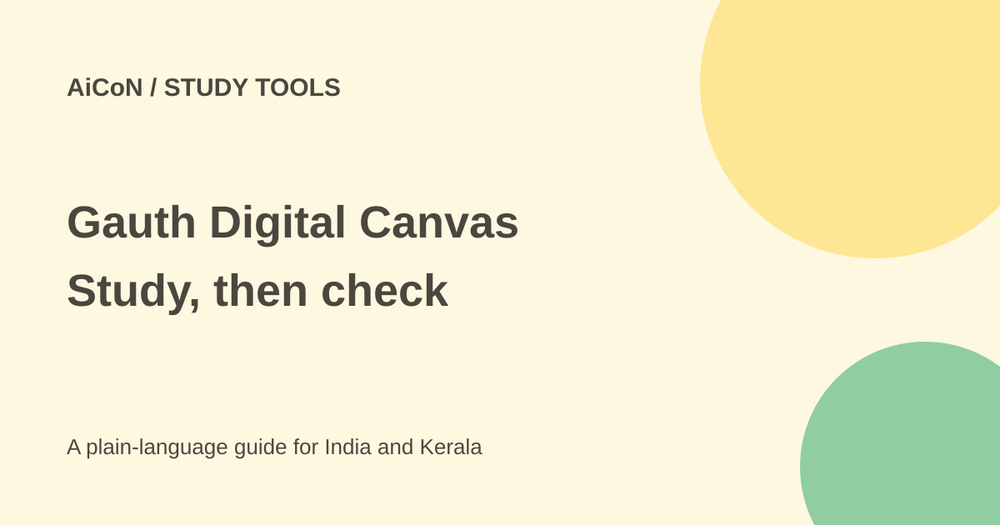

Gauth AI Course canvas: study features and limits
Gauth announced Unlimited Digital Canvas inside AI Course on 2 October 2026. It describes a continuous shared board for lessons and AI explanations. Unlimited refers to the canvas concept, not verified unlimited free tutoring.

What did Gauth announce?
The company press release says the update is live across history and maths libraries. Students and the AI tutor use a continuous board instead of separate slides and chat. Chapters expand beside one another while narration plays.
The release describes pan and zoom, reopening at the previous position, landscape PDF export and link sharing. These are company statements distributed through PR Newswire, not features we tested in a signed-in account.
Current versus planned features
Premium Courses are described as including 3D simulations and animations for subjects such as physics, biology and geography. Learner-generated courses can use a topic or uploaded document with narration, board notes and quick checks.
The release says contextual element-level questions, animation and 3D assets for personalised lessons are planned for a future release. Do not assume those planned features already work in every course.
How to try one lesson carefully
- Open the official Gauth site or app and look for AI Course in your current account.
- Read the account age, privacy, subscription and trial terms before enabling paid access.
- Start with a public topic from a textbook or a document you have permission to use.
- Choose a short lesson and compare its explanations with trusted study material.
- Work through quick checks yourself rather than copying the AI's answer.
- Inspect diagrams, formulas, dates and sources. Ask a teacher when an explanation is unclear.
- Check whether export or sharing is included in your plan before depending on it.
- Remove personal details before sharing a lesson link or uploading a school document.
Free or paid in India?
The press release does not state an AI Course price. Its Premium Courses wording means you should not assume every feature is free. The home page alone does not establish an Indian subscription quote or a permanent free allowance.
No fixed INR cost or India-specific course availability was confirmed. Read the actual checkout, renewal date and cancellation terms before taking a trial. A large canvas does not prove unlimited account usage.
For Kerala students
A visual lesson can help with a difficult topic, but it should supplement teaching and practice. Check whether its material matches your syllabus and whether the language is suitable. No Malayalam course quality was tested.
Do not upload classmates' names, answer sheets or private school records. AI can make a convincing mistake in a formula or explanation. Keep the original source nearby and verify important steps before using them in homework or an exam.
What changed since the original post?
We separated announced current features from personalised-lesson features listed as future plans. We also clarified that Unlimited Digital Canvas is not a confirmed unlimited free plan. No account was opened and no PDF exported.
Frequently asked questions
Are all 3D features available everywhere?
No. The release separates Premium Course examples from future personalised features.
Does it replace a teacher?
No. Check explanations and ask for help with unclear or disputed answers.
Is AI Course pricing confirmed?
No current India-specific price was established from these public sources.
Sources: Gauth-issued press release via PR Newswire · Official Gauth site. Checked 7 October 2026.